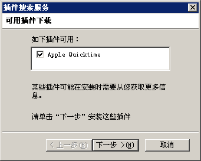
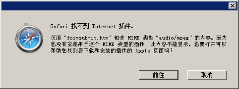
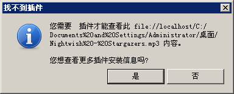

BX9031: IE 和 Chrome 支持通过 EMBED 元素嵌入 MP3 格式文件
标准参考
无
问题描述
对于通过 EMBED 元素嵌入 MP3 格式文件，IE 借由 Windows 系统中的 Media Player 插件来提供支持，Chrome 则对 MP3 等媒体提供了 HTML5 草案中相关元素的原生支持。其他浏览器均不支持此方式。
造成的影响
若直接使用 EMBED 元素播放 MP3 格式文件，则可能造成某些浏览器由于缺少插件而无法播放。
受影响的浏览器
| IE | 借由 Windows 系统中的 Media Player 插件来提供支持 |
|---|---|
| Chrome | 对 MP3 等媒体提供了 HTML5 草案中相关元素的原生支持 |
问题分析
各浏览器对于 EMBED 元素嵌入 MP3 文件的支持情况：
测试样例：
<embed type="audio/mpeg" src="XXX" style="width:400px; height:100px; border:3px solid black;" />
上面代码使用了 EMBED 元素，设置其 type 属性为 audio/mpeg，通过 src 属性引入了一个 MP3 格式文件。
这段代码在不同浏览器中运行结果如下：
| IE6 IE7 IE8 |  |
|---|---|
| Firefox |  |
| Chrome |  |
| Safari1 |  |
| Opera |  |
1. 测试选用的是没有附带 QuickTime 的 Safari。
- IE 使用 Windows 系统中自带的 Media Player 的 ActiveX 插件播放 MP3 文件；
- Chrome 为 MP3 创建出了其原生的播放组件；
- Firefox Safari Opera 默认则不支持 MP3，提示需要安装插件，见下表：
Firefox  Safari  Opera 
上表中的三种浏览器分别可以根据各自的提示信息成功的下载相应浏览器所需要的插件。
Firefox 和 Opera 安装 QuickTime 或者 Media Player Plugin for Firefox 均可使其支持通过插件成功地播放 MP3。
而 Safari 则是由于 QuickTime 与其同为 Apple 公司的产品，Safari 下载分为了两种版本，一种附带有 QuickTime，一种没有附带，若用户直接安装了附带 QuickTime 插件的 Safari 浏览器，则可以顺利地直接播放 MP3 及各类媒体文件。
Chrome对MP3的原生支持
Chrome 会将如上面测试代码中的 EMBED 元素动态生成为 VIDEO 元素，形如：
<video controls="" name="media" src=""/>
而 VIDEO 元素为 HTML5 草案中的元素，它可以引入 W3C 标准中的一些媒体格式，如 OGG、OGV 等。
参见：http://dev.w3.org/html5/spec/video.html。
Chrome 对 VIDEO 元素提供了原生的支持，会为其生成一个播放组件，且 Chrome 支持使用 VIDEO 元素引入 MP3 格式文件。
除了 Chrome Opera 也对 HTML5 的 VIDEO 元素提供了原生支持，但是音频格式暂不支持 MP3。且 Opera 在面对 type 为 audio/mpeg 的 EMBED 元素时，也无法将其自动转换为 VIDEO 元素。
解决方案
在 HTML5 尚未制定完成且普及时，使用 Flash 播放 MP3 文件，以保证最大的兼容性。
参见
知识库
相关问题
测试环境
| 操作系统版本: | Windows XP Professional SP3 简体中文版 |
|---|---|
| 浏览器版本: | IE6 IE7 IE8 Firefox 3.6.3 Chrome 6.0.408.0 dev Safari 4.0.5 (without QuickTime) Opera 10.53 |
| 测试页面: | embed_mp3.html |
| 本文更新时间: | 2010-07-11 |
关键字
EMBED MP3 audio VIDEO